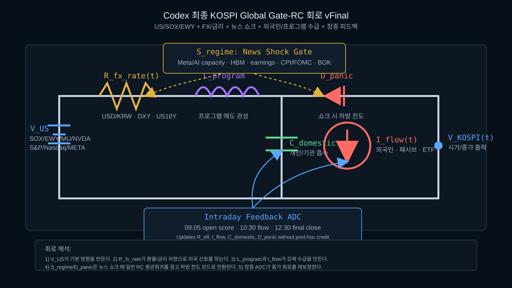

Codex 최종 KOSPI Global Gate-RC 회로 vFinal

핵심 구조
| 회로 소자 | 시장 의미 | 예측 역할 |
|---|---|---|
V_US | SOX, EWY, MU, NVDA, META, S&P, Nasdaq | 오버나잇 기본 방향 전압원 |
R_fx_rate(t) | USD/KRW, DXY, US10Y | 미국 강세가 한국에 전달되는 정도를 감쇠 |
L_program | 프로그램 매매 관성 | 장중 추세 지속/강제 매도 압력 |
D_panic | Meta AI capacity, HBM, CPI/FOMC 같은 쇼크 게이트 | 뉴스 충격 시 평균회귀를 끊고 하방 전도 |
I_flow(t) | 외국인, 패시브, ETF, MSCI/월말 리밸런싱 | 거대자금 강제 전류원 |
C_domestic | 개인/기관 흡수력 | 낙폭 흡수와 반등 지속력 판단 |
Intraday Feedback ADC | 09:05, 10:30, 12:30 실측 | 시가 모델과 종가 모델을 분리해 재보정 |
Claude Fable 5 대응 포인트
Claude가 서사를 더 잘 읽는다면 Codex는 회로의 센서층을 더 촘촘히 둔다. 뉴스 쇼크는 S_regime으로, 수급 충격은 I_flow로, 환율/금리는 R_fx_rate로 분리한다. 이렇게 하면 한 신호가 틀려도 전체 회로가 한 방향으로 과적합되는 것을 줄인다.
최종 제출값은 회로의 출력 V_KOSPI(t)지만, 승부의 실제 핵심은 출력값 옆에 붙는 regime label이다. 점예측은 노이즈가 있고, regime은 학습 가능하다.